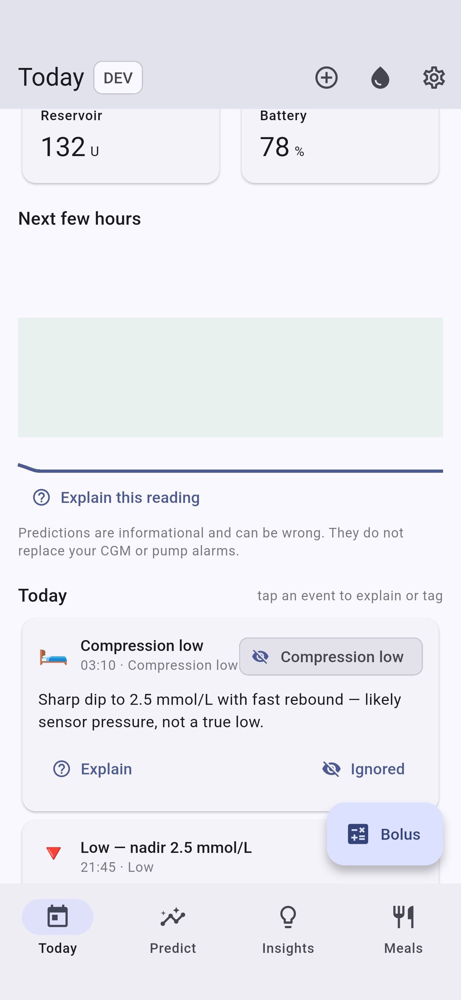
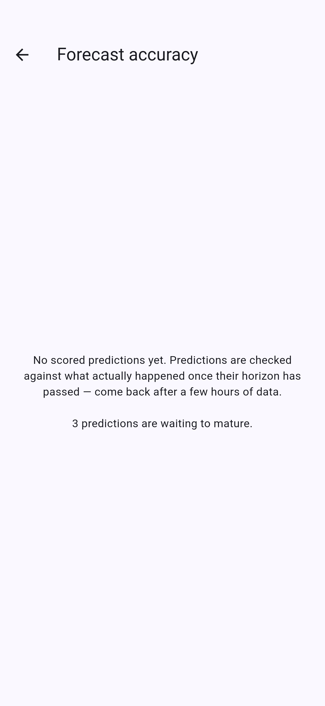

What it is
bgdude syncs your pump and CGM read-only over Bluetooth (via the reverse-engineered pumpx2 library, run in a native foreground service), pulls sleep/HRV/exercise from Health Connect, and runs an on-device engine that predicts glucose, learns how your body responds, and advises on dosing — which you enter on the pump yourself.
Architecture
- Flutter (Dart) — UI, analytics, ML, encrypted storage (drift + SQLCipher).
- Native Kotlin service — owns the BLE/GATT link & pairing; streams state up.
- Read-only comms — the app never sends insulin commands; the pump stays the actuator.
- On-device only — no cloud required; optional Nightscout upload.
Dev mode
Every screenshot and the video below were produced with the built-in simulated t:slim X2 + Dexcom (Settings → Dev mode), which generates a physiologically consistent day using the app's own insulin/carb math — so the whole app is usable and demoable without hardware.
meals + boluses
CGM history
tabs
Video tour
A short walkthrough of the main surfaces, recorded on the Android 17 emulator in dev mode.
media/walkthrough.mp4 — regenerate with tools/gen_docs.ps1 -Video.
Today — the day at a glance
The home tab leads with the Your Day panel: a plain-language narrative plus actionable suggestions and current stats, then the live dashboard.

Your Day panel
A generated headline framed by time of day and the dominant signal, a 2–4 sentence body weaving current glucose, today's time-in-range and mean, and the sensitivity drivers, plus 1–3 suggestions that only appear when their condition holds (never filler).
Dashboard
- Current glucose with trend arrow, range-coloured, with staleness ("just now" / "stale").
- IOB, basal rate, reservoir, battery.
- A short-term prediction cone.
- Connection banner (here: the simulated pump).
Getting-started card appears in real mode while history is thin, guiding pairing, therapy profile, Health Connect and meal logging.
The day event-stream
Everything that happened today on one page — meals, boluses, detected unannounced rises, sustained highs/lows, compression lows, and sensor/site changes.

Each event can be tagged for how the models should treat it: use for model, or ignore because of a compression low, a new sensor, a new infusion site, illness, etc. Ignoring writes an annotation the retraining pipeline already knows how to exclude or relabel — closing the feedback loop from the UI.
Explain this on any high/low/detected event runs the reading explainer, which ranks causal hypotheses (missed carbs, compression low, site failure, activity, insulin stacking) and lets you accept one as a one-tap annotation.
Predict — every model's forecast

- Forecast horizons (30/60/120 min) with uncertainty bands — a deterministic physiological baseline plus a learned per-horizon GBM residual once trained.
- Scenario lines — IOB-only, with-carbs (COB), unannounced-meal (UAM) and no-basal (zero-temp), so you see the spread rather than one confident number.
- Sensitivity readiness — today's resistance multiplier and its drivers.
- Overnight / near-term risk read-out with a suggested action.
- What-if explorer — sliders for carbs and insulin project the trajectory.
Insights — sensitivity, sickness & briefing together

The daily briefing, insulin-sensitivity readiness, illness mode, and model status live together the way they're actually used.
- Daily briefing — overnight TIR + severity-graded insight cards.
- Insulin sensitivity — the effective multiplier and its drivers (short sleep, low HRV…), learned nightly from your history (heuristic until trained).
- Illness mode — a resistance overlay + sick-day checklist; the detector can auto-suggest turning it on when your data looks illness-like.
- A1c goal — current GMI, a 2-week projection, and progress toward your target.
- Sleep & glucose — how your sleep correlates with overnight steadiness.
- Models — forecaster and sensitivity-model status.
Health Connect ingestion is comprehensive — sleep stages, HRV, resting/heart rate, SpO₂, respiratory rate, blood pressure, temperature, steps/distance/energy, weight, hydration, nutrition and menstruation — so insights can correlate against the full picture.
Meals & the pre-bolus coach


Each saved meal learns its personal absorption curve from how it actually played out (measured ~3h later from CGM). The pre-bolus coach simulates eating at several lead times and recommends the longest safe wait to lower the peak — falling back to "eat first" when you're low or dropping fast. "Log this meal" feeds the outcome-learning loop; a timer nudges you when the pre-bolus window is up.
Bolus advisor

Given current glucose, trend, IOB/COB and the context-adjusted ISF/CR, it computes a suggested correction and/or meal bolus and shows the full working so you can sanity-check it.
Guardrails (physiological, not regulatory):
- Honours IOB — subtracts insulin already working.
- Reduces or suppresses the correction when a low is predicted, and says why.
- Refuses a correction when CGM is noisy / in warm-up.
- Caps at your max bolus.
Quick-log & device tracking

One-tap logging for the things the models care about: carbs, an actual bolus, exercise, alcohol, stress, and sensor/site changes. Context tags feed the retraining pipeline; sensor/site changes track age and raise an overdue reminder, and appear on the timeline.
Therapy profile

Enter your pump's profile segments — basal rate, ISF, carb ratio and target per time-of-day window. These feed the what-if engine, the bolus advisor and the predictions directly, so getting them right matters. Basal is also reconstructed live from the pump's reported rate to keep IOB accurate.
Advanced — model internals

For the technically curious: the effective sensitivity context, the learned time-of-day profile (dawn phenomenon etc.), forecaster training state and last outcome, and a Clarke error grid of recent predictions. Advanced mode also decomposes the prediction into its effect lines throughout the app.
Forecast accuracy

Predictions are logged and later scored against what actually happened once their horizon has passed — per horizon: RMSE, Clarke A+B (clinically-safe fraction), and hypo sensitivity. A retrained model must clear the A+B gate and beat the physics baseline before it goes live, so a bad training run can never degrade the forecast.
The learning loop
History is persisted to the encrypted store and drives a set of background jobs that run at startup and overnight.
Jobs
- Health Connect sync → sensitivity features.
- Meal-outcome loop → refine each meal's curve.
- Prediction reconciliation → accuracy scoring.
- Morning briefing (foreground + WorkManager backstop).
- Sensor/site reminders.
- Forecaster retrain (gated); sensitivity + time-of-day training.
- Illness auto-suggestion.
- History-Log backfill (best-effort).
Models
- Deterministic what-if — exponential IOB, ICE carb absorption, momentum.
- Residual forecaster — per-horizon gradient-boosted trees on top of the baseline.
- Sensitivity — ridge over sleep/HRV/exercise/cycle/illness, Autotune-style labels.
- Time-of-day — per-bucket multipliers (dawn/evening).
- Event detectors — unannounced meals, compression lows.
Alerts & real-time helpers
Beyond the forecast, the app watches for the situations that matter and offers help in the moment — all additive to your CGM/pump alarms, never a replacement.
Proactive alerts
- Predicted low / high nudges with a suggested action and cooldowns.
- Missed-bolus? — a sustained unbolused rise triggers "did you forget to bolus?".
- Stubborn high — high for hours with IOB doing nothing (and an old site) → possible site failure.
- Connection lost — a heads-up when the pump has been unreachable for ~10 minutes.
- Sensor/site overdue reminders from the age tracker.
In-the-moment help
- Rescue-carb helper — when low or predicted-low, a 15-15-aware "take ~Ng" card that accounts for IOB and the predicted nadir.
- Explain this reading — from the dashboard or any timeline event, ranked causal hypotheses you can accept as a one-tap annotation.
- Calibrated uncertainty — the prediction cone widens from the forecaster's recent live error, not just training-time sigma.
Integrations
Garmin watch
A Connect IQ (Monkey C) glance/widget shows BG + trend, signed delta, IOB, and battery/reservoir — greying when stale — pushed from the phone over the free Connect IQ Mobile SDK (no paid Garmin API).
Nightscout & home widget
Optional Nightscout upload (entries, treatments, device status) configured in Settings, and an Android home-screen widget mirroring current BG/trend/IOB.

Safety & scope
- Read-only pump comms enforced at the bridge — no insulin/control command path exists.
- The advisor shows its working and leans conservative near lows; it never replaces CGM/pump alarms.
- A retrained model is promoted only after passing an error-grid safety gate.
- Personal-use tool; not a medical device. Pairing with pumpx2 unpairs the official t:connect app.
Regenerating this documentation
All media is produced by driving the app in dev mode on an Android device/emulator — no manual captures. Re-run any time the UI changes.
# screenshots only (→ doc/screenshots/*.png) powershell -File tools/gen_docs.ps1 # also record the walkthrough (→ doc/media/walkthrough.mp4, .gif if ffmpeg present) powershell -File tools/gen_docs.ps1 -Video # macOS / Linux tools/gen_docs.sh --video
Under the hood: integration_test/screenshots_test.dart navigates every screen and calls
binding.takeScreenshot(); test_driver/screenshot_driver.dart writes the PNGs.
integration_test/walkthrough_test.dart drives a slow tour while adb screenrecord
captures the screen. Adding a screen is a few lines in the screenshots test plus an <img> here.